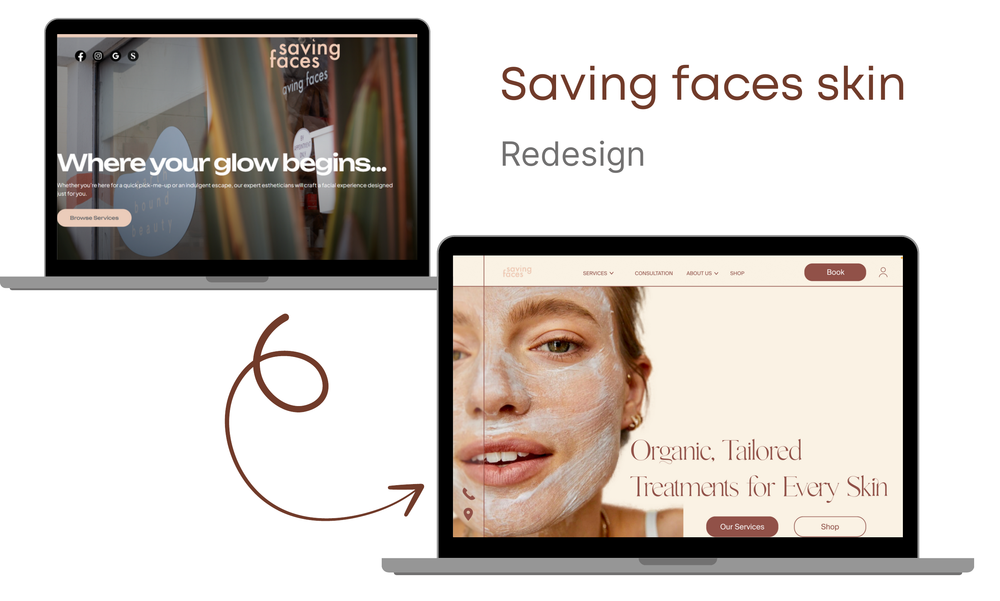
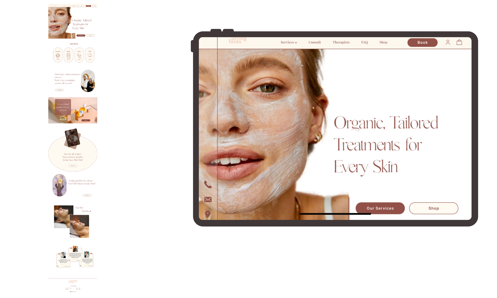
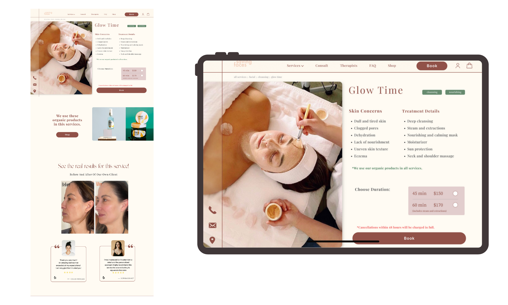
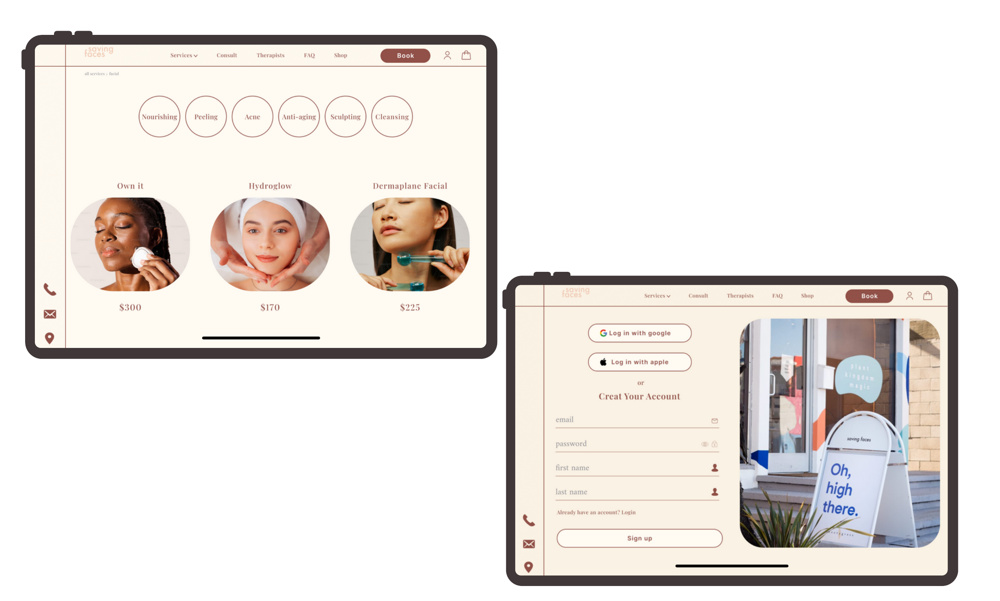

About the project
Saving Faces is a boutique skincare and beauty studio in Los Angeles offering facial treatments, consultations, and skincare products. The existing website lacked clear service categorisation, had a confusing navigation structure, provided insufficient trust signals, and delivered a fragmented booking flow.
This was an educational redesign project guided by mentor feedback and supported by user research — with the goal of building a more trustworthy, intuitive, and conversion-focused digital presence.
Problem Statement
"The existing website failed to build trust or guide users to book — poor information architecture, unclear services, no visible reviews, and a broken booking flow that redirected users to an external page and restarted the process."
What needed to change
Core Issues
- Users couldn't easily understand which service was right for them
- Service descriptions were long or unclear
- No reliable reviews or before/after photos
- Navigation was scattered and inconsistent
- Booking redirected to an external page and restarted
- Lack of clear pricing and esthetician info reduced trust
Design Goals
- Enhance clarity and organisation of services
- Improve user trust through reviews and visuals
- Simplify and streamline the booking experience
- Create a cohesive, modern visual identity
- Ensure mobile and desktop responsiveness
Research methods
1. Heuristic Evaluation
A team of 4 evaluated the original Saving Faces website using Nielsen's 10 Usability Heuristics. We assessed both the overall user flow and individual pages.
Navigation & IA
Services categorisation was unclear. Home page lacked a clear menu. Hamburger menu on desktop was unnecessary and confusing.
Content & Visual Clarity
Service descriptions were too long and unclear. Fonts weren't easily readable. Icons and links created an inconsistent visual hierarchy.
Trust & Credibility
No reviews on the main site. No before/after photos. Gift card option was hidden. Users were misled into thinking booking happened on the main site.
Functionality
Website not responsive for desktop or mobile. Booking redirected to an external site, restarting the entire process from scratch.
2. User Interviews
We conducted interviews with 9 potential skincare website users to understand their needs, expectations, and pain points when exploring services and booking appointments online.
3. User Survey
A survey with 37 participants validated user expectations around service selection and website content. Key findings:
- 95% said they always or sometimes need expert guidance when choosing skincare services
- 75.8% preferred in-person consultation as their format
- Most users relied on customer reviews (48.6%) and clear service descriptions to make decisions
- First step in decision-making was typically online research (48.6%)
- Most helpful feature: personalised recommendation tool (37.8%)
4. Affinity Diagram
Synthesising user interview insights, we identified the five most critical user needs:
- Clear and concise service descriptions
- Reliable reviews and before/after visuals
- Transparent pricing and esthetician information
- Easy access to services and consultation options
- Visible and simple booking schedule
Shaping the redesign strategy
Research findings were translated into a clear set of design directions through personas, user flows, and a restructured sitemap.
Persona
A skincare-curious user who needs clear guidance, trusts reviews, and wants a frictionless path from discovery to booking — without being redirected mid-flow.
Sitemap Restructure
We rebuilt the information architecture to surface service categories clearly, remove dead-end navigation paths, and create a logical flow from homepage to booking confirmation.
User Flow
Mapped the complete journey from arriving on the homepage to successfully booking a service — identifying drop-off points in the original flow and eliminating them.
What Needs to Change
Prioritised improvements around: navigation clarity, service descriptions, trust-building content (reviews, photos, pricing), and a seamless integrated booking flow.
Wireframing & testing
We ran an ideation workshop to explore different layouts and interaction patterns, then created low-fidelity wireframes tested with users before moving to high-fidelity.
Usability testing on wireframes revealed that users still needed clearer differentiation between service types, leading to a card-based service layout with visible pricing and short descriptions at the discovery stage.
Key Solutions to Pain Points
- Replaced hamburger menu on desktop with a clear horizontal nav
- Redesigned service pages with scannable cards, concise descriptions, and visible pricing
- Added a dedicated reviews section with before/after photo support
- Integrated booking flow directly within the site — no external redirect
- Added esthetician profiles to build personal trust
- Introduced a consultation entry point for users unsure which service to choose
Final design
The final UI design brought Saving Faces' premium service quality to life digitally — clean, minimal, and trustworthy. The design system was built for cohesion and scalability, with components that work consistently across desktop and mobile.
Key Outcomes
- Clear service categorisation with scannable card layout
- Integrated booking flow — no external redirects
- Visible reviews, before/after photos, and esthetician profiles
- Transparent pricing on all service pages
- Fully responsive design for desktop and mobile
- High-fidelity prototype validated through final round of usability testing
Before & After — The Redesign

Homepage
The new homepage opens with a calm, full-bleed hero ("Organic, Tailored Treatments for Every Skin") and flows through service categories, consultation prompt, organic products, gift-card teaser, before-and-after gallery, and verified client testimonials.

Service Detail Page — Glow Time
Each service page now leads with the treatment in action, followed by Skin Concerns + Treatment Details split into two scannable columns, a clear duration / price selector, an integrated Book CTA, "We use these organic products" trust block, and a before / after gallery with verified client reviews.

Category Filter & Account
Service categories sit as pill filters (Nourishing · Peeling · Acne · Anti-aging · Sculpting · Cleansing), each tap loading a curated set of services with clear pricing. The account flow keeps friction low — Google / Apple sign-in, or a short email form with a calming brand-photography panel beside it.

Key Learning
"Trust is built before the booking button. Users won't convert if they can't clearly understand the service, see proof it works, or feel confident in the person delivering it."